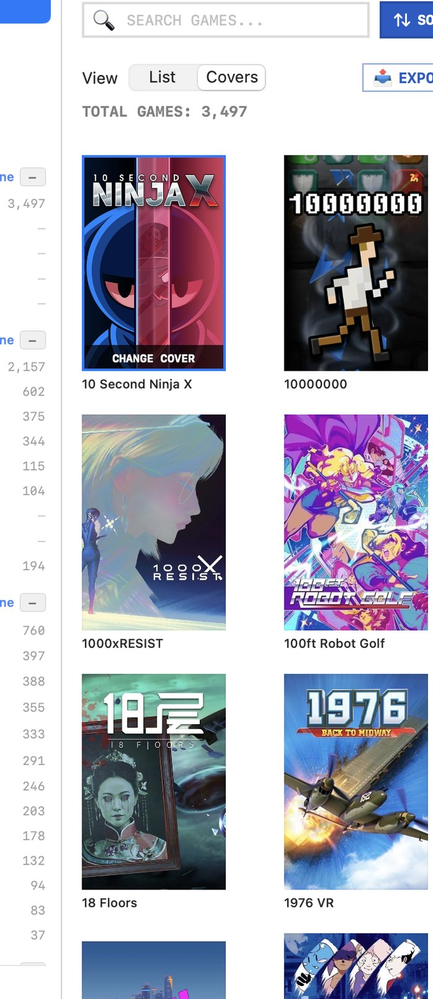
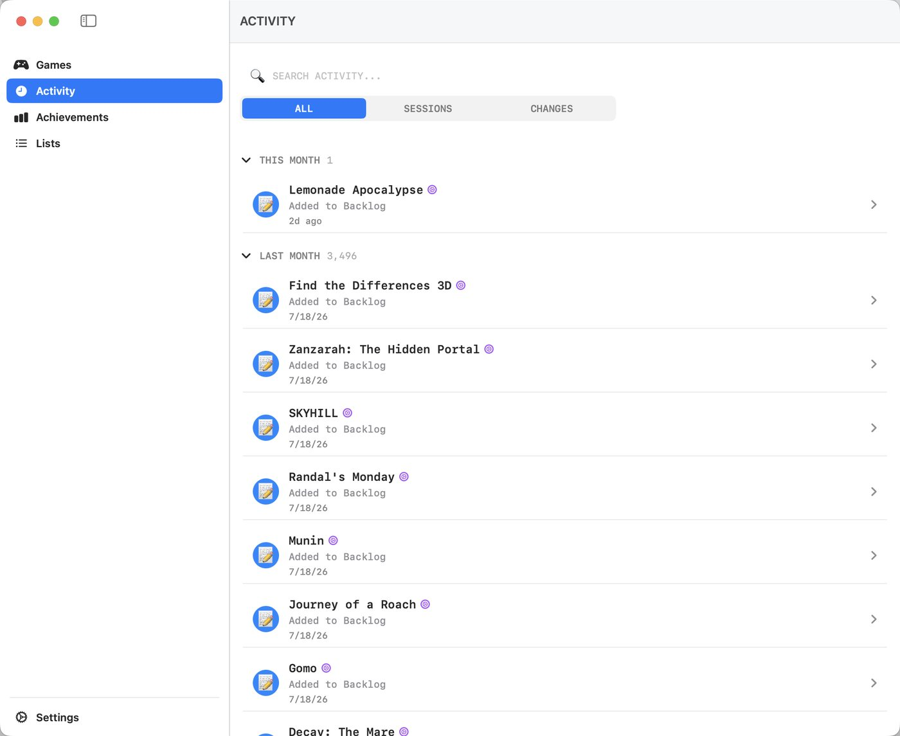
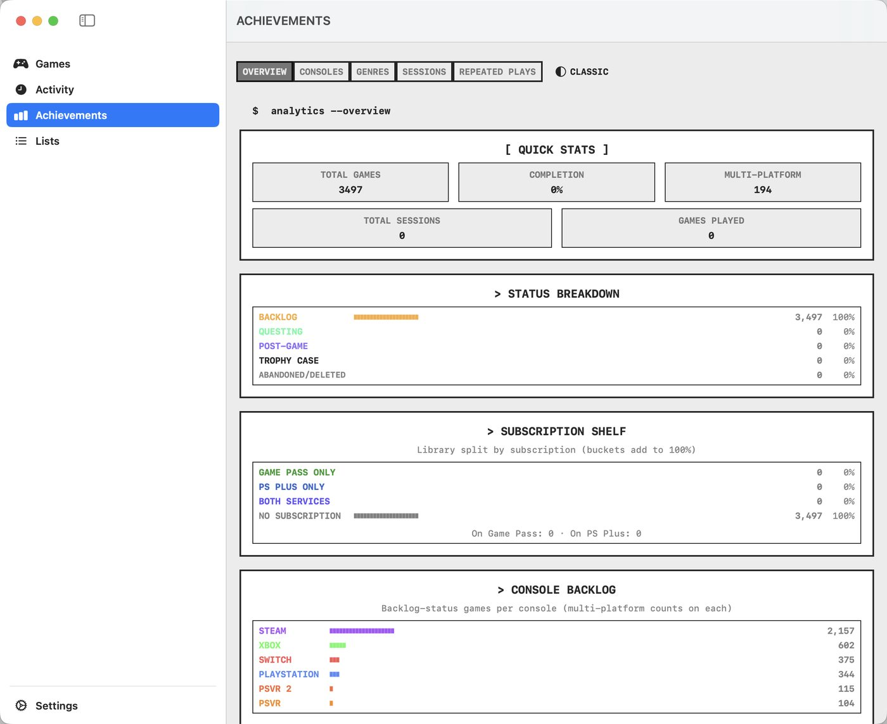
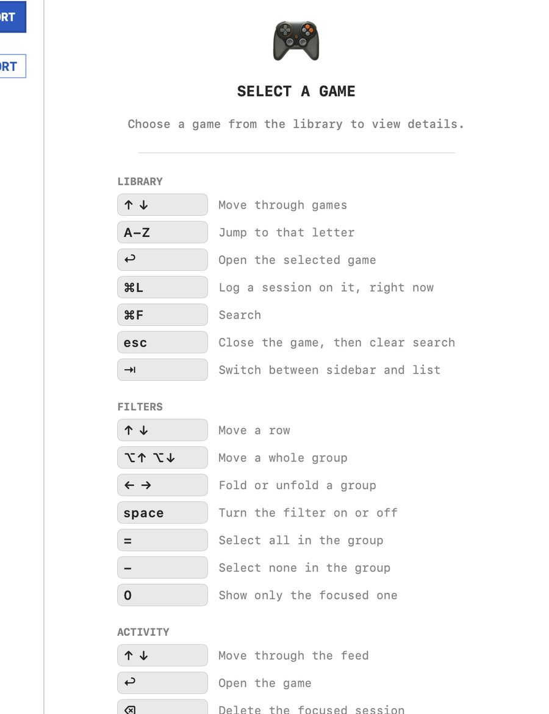
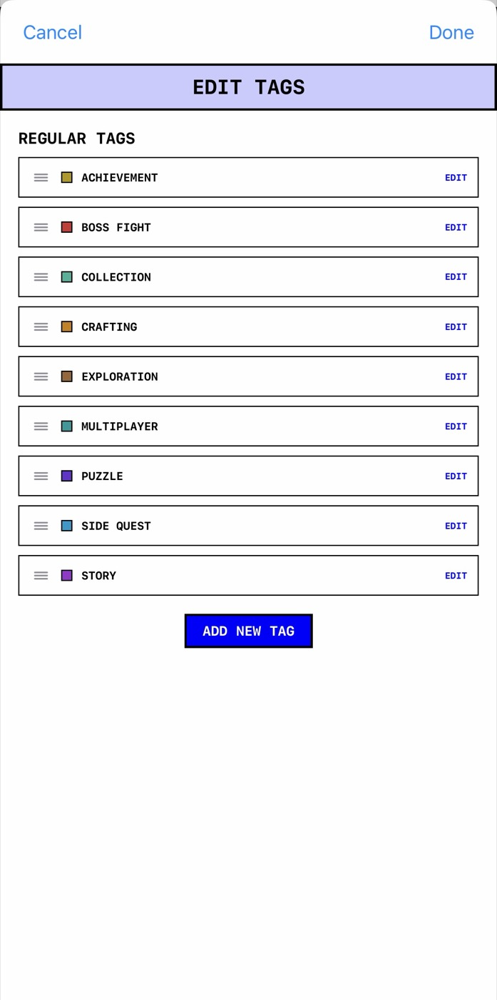

No account
Open it and start. No sign-up, no password to forget.
Quest Chronicle can hold thousands of games and still feel like your library, not a chore. It tracks the details for you — finds your cover art, logs a session in one tap, and never makes you type the same thing twice.
Quest Chronicle on macOS & iPhone — click either to see it full size
Your library
Type a title, however you actually spell it, and the box art turns up. Fuzzy matching means "Froze Horizon 4" still finds Forza; when one source has nothing, it asks another.
Names and status when you're organising. A wall of art when you're deciding what to play. One click apart.

Where things stand
Not a rating. Where the game actually stands with you — and Backlog empties itself, because logging a session on a game proves you started it.
Games you want to play but haven't started yet.
Games you're actively playing.
Main content is done, but you still have optional goals.
Games you've completed 100%.
Abandoned — games you've given up on or decided not to play. Off to the side, not part of the run.
Logging
The moment you want to record playing something is the moment you least want to open an app. The iPhone widget puts your recent games on the home screen: tap one, it's logged. On the Mac it's ⌘L — no window, no dialog. Everything lands in a feed you can correct later.

Smart lists
A regular list you fill yourself. A Smart List you describe — Console is Switch, Status is Backlog — and it goes and finds them, then keeps finding them. Import forty games tonight and every one that fits is in the list by morning. A live count sits under the rules while you build them, so you know a list is worth making before you make it.
Achievements
How much of it have I finished. Which console is the backlog really on. What am I paying a subscription for and never playing. One screen, no configuring.

Keyboard
Several thousand rows you can only reach with a mouse is not a library, it's an endurance test. Every action has a key — and the full guide sits beside the list rather than hidden in a menu.

Make it yours
Steam through Meta Quest, Action-Adventure through Metroidvania — sensible to start with, none of it fixed. Add a console the app has never heard of, rename a genre to the word you actually use, reorder any of it, give each its own icon and colour.
Tags are the free-form layer on top. Every one is a filter, and every one is something a Smart List can be built on.

Themes
Eight themes, each hand-authored twice — a light ground and a dark one — so picking a look never takes your Appearance setting away from you.
Real screenshots of the same screen. Each opens on whichever ground matches your own setting — click any one to see its other half.
Can't choose? Turn on shuffle and the app picks one for you on a schedule — changing when you next open it, never while you're in the middle of using it.
Privacy
Your games stay on your devices and sync through your own iCloud account. There is no Quest Chronicle server, because there is nothing it would need one for.
Open it and start. No sign-up, no password to forget.
No analytics, no telemetry, nothing watching what you play.
Export the whole library to CSV whenever you like.